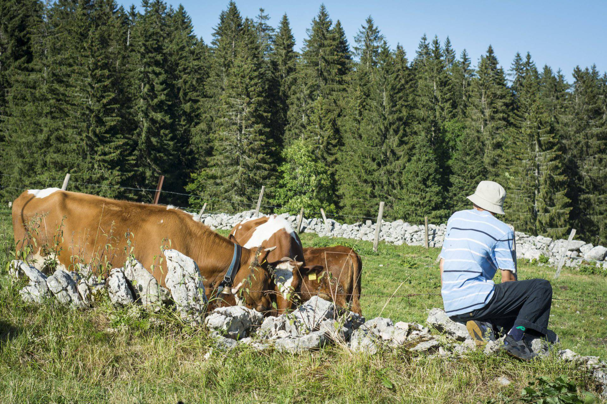
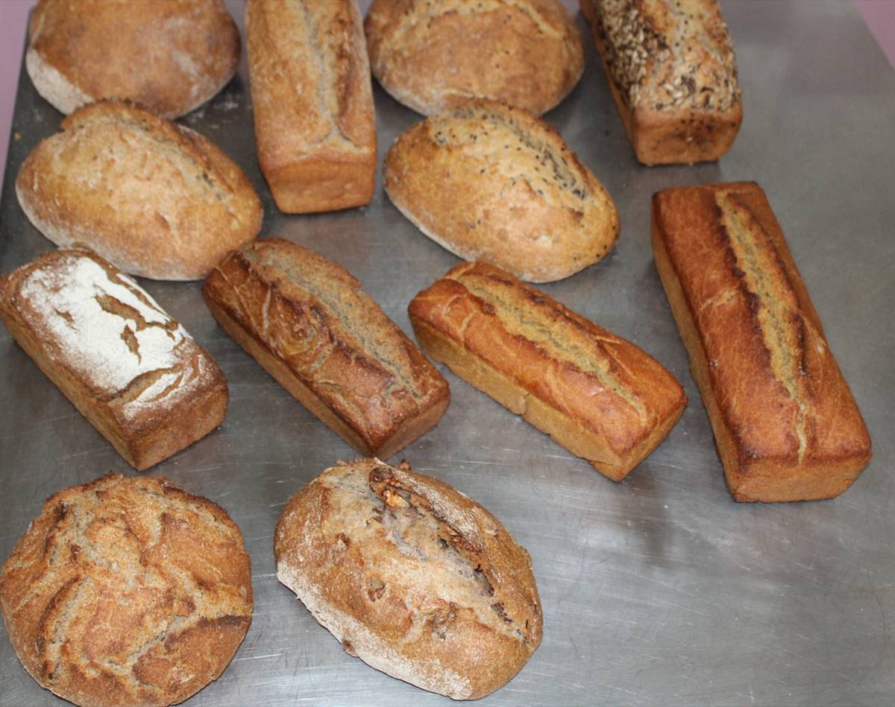

Fabriqués de mars à octobre
Fromages de chèvre
Crottins frais, demi-frais et secs, bûches cendrées, cœurs, tomme et faisselles. Le lait de nos chèvres est transformé tous les matins, de mars à octobre.
Maquette proposée à la Batailleuse. Tous les contenus viennent de votre site actuel.

Venir à la ferme · Rochejean
Visite libre, boutique, lait à l’heure de la traite, pain au levain du fournil, anniversaires : tout ce qu’il faut savoir avant de venir, et de quoi commander sans téléphoner.
Photo : Florian Houdelot
Aujourd’hui à la Bata
Voir les trois périodes et toutes les dates
01 Horaires 2026-2027
Trois rythmes dans l’année, calés sur les vacances scolaires. La période en cours est signalée, les dates passées sont barrées.
Du mardi au samedi
Mercredi, vendredi et samedi
Le mercredi
Le vendredi 25 décembre 2026 et le vendredi 1er janvier 2027. L’accueil n’a jamais lieu le dimanche ni le lundi.
C’est le seul moment où nous vendons le lait de vache, les jours d’ouverture.
Les horaires de 2027 ne sont pas encore publiés. Une fermeture imprévue, un jour de neige : l’info du jour s’affiche dans le bandeau en haut de chaque page.
02 Visite libre et adhésion
Pendant l’accueil, vous faites le tour de la ferme à votre rythme : les chèvres, les vaches, les cochons, les lapins, les poules et le fournil. Avant, la visite était à prix libre.

« La visite libre demande du temps et de l’énergie. »
L’équipe de la Batailleuse
Les temps sont durs pour une association : coupes budgétaires de l’État, charge de travail qui augmente, maladies qui touchent nos bêtes, baisse du pouvoir d’achat. Nous avons donc fait ce choix pour faire grandir la communauté autour de la Bata (accueillir plus d’adhérent·es, renforcer les liens, encourager l’implication bénévole), pour faire rayonner et défendre notre modèle associatif, et pour reconnaître le travail d’accueil. Il tient aussi, disons-le franchement, à un « contexte économique tendu » : il nous aide à garder un minimum de ressources pour que la Batailleuse continue de vivre.
Les adhésions se paient à la boutique. Celle à l’année se prend aussi en ligne.
Même avec une entrée par l’adhésion, la ferme reste un lieu d’accueil et de convivialité. Si cela vous pose difficulté, parlez-en avec nous : la bienveillance reste la base.
03 La boutique
La boutique vous attend aux heures d’ouverture. Son accès reste libre et gratuit : pas besoin d’adhérer pour faire vos courses.
Crottins frais, demi-frais et secs, bûches cendrées, cœurs, tomme et faisselles. Le lait de nos chèvres est transformé tous les matins, de mars à octobre.

Le lait de vache se vend seulement à l’heure de la traite, les jours d’ouverture. Yaourts et faisselles au lait de vache sont faits ici, à la ferme.

Nos poules pondent pour la vente directe. Et au fournil, à deux pas : pains au levain, biscuits et crackers comté-graines.
La plus grande partie de notre lait de vache part à la fruitière des Pontets, dont la ferme est coopératrice. Il y devient du Comté, du Morbier et, en hiver, du Mont d’Or bio. Nous en revendons à la boutique, avec du miel local, des bières du Jura et, selon la saison, de la charcuterie, des confitures et du pesto.
La Pive donne du sens à nos achats : elle privilégie les circuits courts et de qualité et favorise l’emploi sur notre territoire.
Un extrait de « C’est là ! Retour à l’essentiel » présente la ferme de la Batailleuse, dans le Doubs.
Un extrait de « Carnets de campagne », sur France Inter, le 22 septembre 2021.

04 Le fournil
Des farines bio et régionales, du levain, un four à bois. Le pain du fournil est certifié Agriculture biologique.
| Pain | Miche de 1 kg | Miche de 500 g | ||
|---|---|---|---|---|
| Juste | Solidaire | Juste | Solidaire | |
| Naturefarine de blé T80 | 5,10 € | 6,20 € | 2,80 € | 3,40 € |
| Aux graineslin, tournesol | 6,20 € | 7,50 € | 3,30 € | 4,00 € |
| Blé sarrasin | 6,20 € | 7,50 € | 3,30 € | 4,00 € |
| Seigle | 6,20 € | 7,50 € | 3,30 € | 4,00 € |
| Engrainpetit épeautre | 7,80 € | 9,40 € | 3,90 € | 4,70 € |
| Aux noixen 500 g seulement | — | — | 5,20 € | 6,30 € |
Brioche au levain de 450 g, le vendredi : 5,60 € au tarif juste, 6,80 € au tarif solidaire. Le contrat de septembre à décembre reprend les mêmes prix, sans les brioches. Le prix du pain acheté hors contrat se voit avec les boulanger·es.
Depuis le 1er janvier 2026, les contrats pain ont deux tarifs. Le tarif « juste » correspond au prix actuel du pain. Le tarif « solidaire » est le prix juste « + 20% », arrondi aux 10 centimes supérieurs. C’est vous qui choisissez, en l’entourant sur votre contrat.
Pour le lundi, le mercredi et/ou le vendredi, au mois. Les brioches se commandent sur la fournée du vendredi.
Pour le pain du mercredi seulement, du 2 septembre au 30 décembre 2026. Pour le rejoindre en cours de route, voyez avec les boulanger·es.
Remplissez le contrat, en PDF à imprimer ou en tableur, et envoyez-le à ferme@claj-batailleuse.fr. Les documents sont aussi disponibles au fournil. Vous réglez par chèques à l’ordre du CLAJ, un par mois, tous remis à la signature et débités en fin de mois. Pour changer une quantité, prévenez au moins 24 h à l’avance.
Le pain des contrats se récupère au fournil de la Batailleuse, à partir de 17h. Si la fournée sort plus tard, les boulanger·es vous préviennent par SMS.
Sans contrat
Pour une fournée, un pain ou dix : dites-nous lesquels, et le fournil vous les met de côté.
Sur le vrai site, la précommande se fermerait toute seule la veille à 17h, et les boulanger·es recevraient chaque soir le récapitulatif de la fournée suivante, sans décrocher pendant le pétrissage.
Pendant les vacances scolaires
Le fournil se chauffe pendant les vacances scolaires pour des pizzas bio à emporter, cuites au four à bois. Prochaines vacances : la Toussaint, du 17 au 31 octobre. Les jours de vente sont annoncés dans l’agenda.

05 Anniversaire à la ferme
« Un après-midi plein de surprises avec soin des animaux » : les chèvres, les vaches, les lapins, les cochons et les poules, avec nos animateur·rices. Puis le goûter, dans une salle prévue pour vous.
110 € pour 8 enfants, puis 10 € par enfant en plus
Anniversaire, fournil, tout-petits
Décrivez votre projet : l’équipe d’animation le reçoit complet, par mail, et revient vers vous pour caler la date et le déroulé.
Infos pratiques
La ferme est route de la Batailleuse, à Rochejean. Le Chalet du Souleret, 16 rue de la Fontaine, est une autre adresse : c’est celle des séjours, pas de la visite.
La ferme de la Batailleuse
Route de la Batailleuse, 25370 Rochejean
Le fournil, la veille avant 17h pour une commande
L’équipe d’animation, par mail
Plan d’accès et tous les contacts
Non. L’accueil a lieu du mardi au samedi pendant les vacances scolaires, le mercredi, le vendredi et le samedi entre les vacances, et le mercredi seulement de novembre à février. Toujours de 16h30 à 19h.
Non. L’adhésion concerne les adultes de plus de 18 ans : pour les mineurs, l’accès est gratuit.
Non, la boutique reste en accès libre et gratuit, aux heures d’ouverture. Le lait de vache se vend de 17h45 à 18h15.
À la boutique, pendant l’accueil. L’adhésion à l’année se prend aussi en ligne, sur HelloAsso.